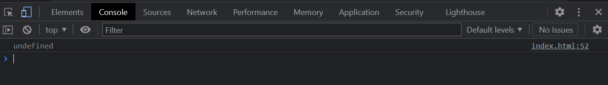
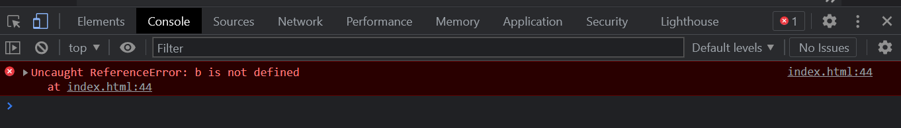

| Undefined |
Not Defined |
| 1. It is a JavaScript keyword that has a special meaning. Everything which gets a space in memory will contain undefined until we assign a value to that memory space. |
1. In JavaScript, it is one of the reference errors that JavaScript will throw when someone accesses the variable which is not inside the memory heap. |
| 2. It works like when we declared a variable in the code but did not assign the value before printing the variable value |
2. It works like when we did not declare the variable and try to call that variable. |
3. Example: In this example we defined the variable vkg but didn't assigned any value , Hence it'll show undefined message in console .
var vkg;
console.log(vkg);
| 3. Example: In this example we try to print the value of b without defining the b , Hence it will show not defined in console
console.log(b);
|
|  |
 |